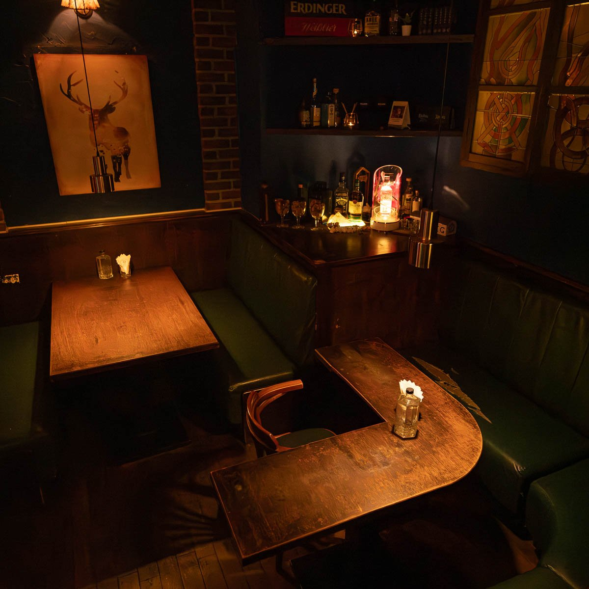

01 / CALL US
電話訂位
04-2463-1428詢問近期空位、當日到店或臨時異動。
撥打電話RESERVATION
透過電話或官方 Instagram 洽詢。
收到店家回覆確認後，才算完成訂位。

你好，想詢問 Bar Easy
訂位：
日期：
到店時間：
人數：
稱呼：
聯絡方式：
特殊需求（慶生／座位／飲食等）：
請協助確認空位與當日消費規則，謝謝。
可複製後貼到 Instagram，再填寫資料。
HOUSE RULES
依店內提供規則整理。活動或特殊安排，請在訂位時再次確認。
低消適用方式、活動條件與其他費用，請於訂位時詢問。
禁止攜帶外食，慶生蛋糕除外。保存、餐具與慶生安排請先確認。
開瓶費 NT$800／瓶，不計入低消。
開瓶寄酒期間為半年，適用方式與期限請向現場確認。
破杯酌收 NT$300；店內嘔吐酌收清潔費 NT$3,000。
戶外吸煙區請輕聲交談。請依自己的步調飲酒，並安排安全返程。
有異動請盡早透過原訂位管道聯繫。座位保留、遲到、訂金及取消條件，以訂位時雙方確認的內容為準。指定座位、多人聚會或包場須由店家另行確認。
GOOD TO KNOW
週一公休。週二、週三、週四及週日為 20:00 至翌日 02:00；週五、週六為 20:00 至翌日 03:00。特殊節日或臨時調整請以官方 Instagram 公告為準。
週二、週四為學生之夜；週三為女士之夜；週五、週六有駐唱；週日為啤酒暢飲。演出時間、優惠、資格及活動是否調整，以官方 Instagram 當期公告為準。
有小點、主食、熱湯、披薩與甜點。松露野菇及瑪格麗特披薩在原菜單標示為蛋奶素；過敏原、交叉接觸及特殊飲食需求，請提前與店家確認。